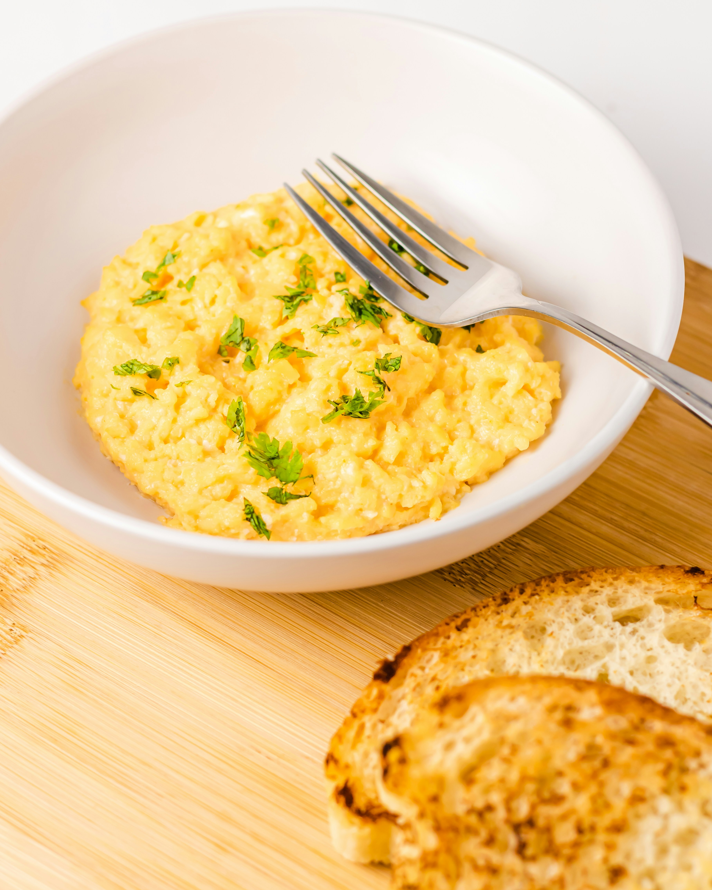

Scrambled Eggs Recipe
← Back to Recipes

Description
Learn how to make delicious scrambled eggs with this simple recipe.
Ingredients
- 2 eggs
- Salt to taste
- Butter or oil for cooking
- Optional: milk or cream for creamier texture
Steps
- Crack the eggs into a bowl.
- Add a pinch of salt and whisk until well combined.
- Heat a non-stick skillet over medium heat and add butter or oil.
- Pour the egg mixture into the skillet.
- Gently stir with a spatula, pushing the eggs from the edges to the center.
- Cook until the eggs are just set but still slightly runny.
- Remove from heat and serve immediately.
Enjoy your scrambled eggs!